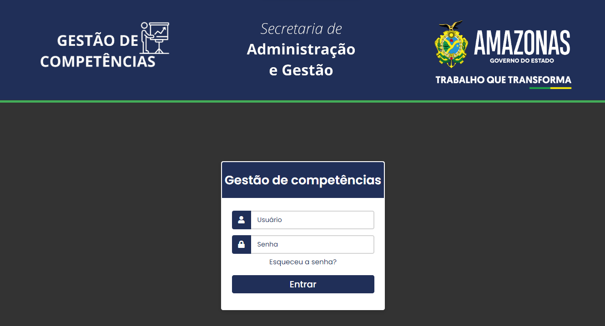

Projetos

Sistema de gestão e competências
O projeto de sistema de gestão de competências foi desenvolvido com o objetivo de facilitar e otimizar o processo de acompanhamento e avaliação das competências dos servidores da Secretaria de Administração do Amazonas (SEAD-AM). Esse sistema permite que os servidores acessem um ambiente online através de um login seguro, preencham um formulário com informações relevantes sobre suas competências e habilidades, e armazenem esses dados em um banco de dados SQL, garantindo a disponibilidade e integridade das informações.
Conheça